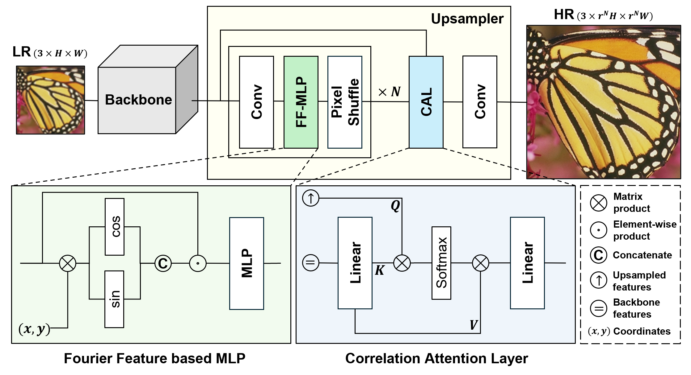

Architecture overview: Fourier-Feature MLP, PixelShuffle, CAL/XRA.

We propose Frequency-Guided Attention (FGA), a lightweight upsampling module for single image super-resolution. Conventional upsamplers, such as Sub-Pixel Convolution, are efficient but frequently fail to reconstruct high-frequency details and introduce aliasing artifacts. FGA addresses these issues by integrating (1) a Fourier feature-based Multi-Layer Perceptron (MLP) for positional frequency encoding, (2) a cross-resolution Correlation Attention Layer for adaptive spatial alignment, and (3) a frequency-domain L1 loss for spectral fidelity supervision. Adding merely 0.3M parameters, FGA consistently enhances performance across five diverse super-resolution backbones in both lightweight and full-capacity scenarios. Experimental results demonstrate average PSNR gains of 0.12–0.14 dB and improved frequency-domain consistency by up to 29%, particularly evident on texture-rich datasets. Visual and spectral evaluations confirm FGA’s effectiveness in reducing aliasing and preserving fine details, establishing it as a practical, scalable alternative to traditional upsampling methods.
@article{Choi2025FGA,
title = {Fourier-Guided Attention Upsampling for Image Super-Resolution},
author = {Choi, Daejune and No, Youchan and Lee, Jinhyung and Kim, Duksu},
journal = {arXiv preprint arXiv:2508.10616},
year = {2025}
}